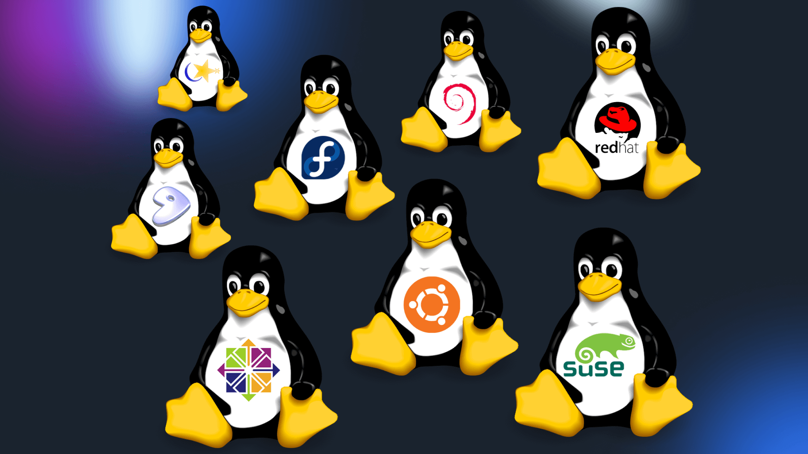

January 26, 2023
The lightest linux distributions
Choosing the ideal Linux distribution for your needs can be challenging due to the hundreds of options available.
For example, some Linux distributions are made with beginners in mind, while others are built for advanced users. Also, some specialized Linux distributions are built for particular purposes.
Lighter Linux distributions
1. Lubuntu

Lubuntu is an open source Linux distribution based on Ubuntu that claims to be fast and lightweight. It is available on 32-bit and 64-bit platforms.
Although the developers no longer reveal the exact minimum hardware requirements on the official website, Lubuntu is still considered the best Linux distribution for older computers. A minimum of 256 MB of RAM and 8 GB of available disk space is recommended to run the basic Lubuntu desktop environment.
Despite its energy efficiency, Lubuntu is a powerful Linux distro as it is based on the latest version of Ubuntu. As a result, it is highly compatible with Ubuntu software and repositories. This allows users to access thousands of applications and packages available through the Lubuntu Software Center.
The system comes with a number of lightweight apps pre-installed, such as Trojita and Skanlite. Lubuntu uses lightweight desktop environments like LXDE and LXQt, which help minimize resource usage.
One thing to note before using Lubuntu is that it has a simple and straightforward system interface with a low screen refresh rate. On the other hand, Lubuntu is a great option if you prefer a clean looking desktop for your machine.
[ Donwload Here ]
2. Linux Lite
Linux Lite is an open source operating system based on the Ubuntu Long Term Support (LTS) release series. We recommend this lightweight distro for Windows users considering switching to a Linux-based operating system.
To make the transition from other operating systems as seamless as possible, Linux Lite comes with a Windows-like desktop environment and is compatible with preconfigured and additional familiar apps like Spotify, Skype, and Firefox.
Other than that to run, Linux Lite doesn't require too many resources, as it employs custom Xfce as its lightweight desktop environment. It also offers a memory compression tool called zRAM that allows fast performance on older machines.
Also, Linux Lite has a built-in Lite Tweaks application that is used to clean and fix problems within the operating system.
The minimum hardware requirements for this Linux distro include 1 GB of RAM and a 1 GHz CPU with two or more cores. The system does not support 32-bit architectures and is only available for 64-bit platforms.
[ Donwload Here ]
3. antiX
antiX is a fast, easy to install and lightweight Debian-based Linux distribution for Intel-AMD x86 compatible systems. It is totally free of systemd.
This Linux distribution supports both new and old machines with its antiX Magic feature. It provides a powerful kernel and Debian-compatible applications, regular updates, and repositories. antiX uses SpaceFM as its default desktop environment.
The antiX interface is based on the GTK+ toolkit and uses IceWM as a window manager. The distro is compatible with 32-bit and 64-bit architectures. antiX can also be used on a fast boot rescue CD and works fine running live from a USB stick, with or without persistent file storage.
antiX runs smoothly with 256 MB of RAM and its installer requires at least 5 GB of available disk space. It comes in four downloadable versions:
• Full: Contains the full range of applications.
• Base: Allows users to choose their application suites.
• Core: Gives users full control over the installation.
• Net: Same as Core version but without default desktop environment.
[ Donwload Here ]